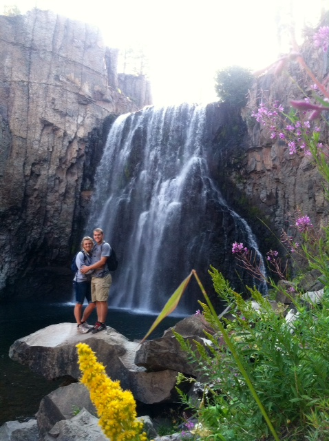
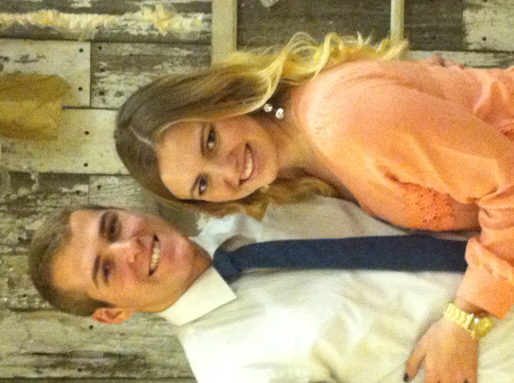

Welcome to Jared Mackie's Home Page
|  |  |
|
|---|
|
Intro |
Hobbies |
Education |
|---|---|---|
|
About: Hemet California is near riverside which is about an hour away from disneyland. I have been married for almost two years and love being married to my wife. I served my mission in nicaragua and have been home for three years now. I will be doing an internship in the april at family search which I am very excited to start. |
I played Soccer, volleyball, and waterpolo all through high school and soccer since I was little. I love playing sports especially these three sports. I enjoy playing all types of games so all boardgames, all outdoor games like bocceball, ladderball and pickleball. I enjoy hiking and being outside,being very active makes me happy. |
I am second semester junior here at byui and have two more semesters left after this one. Before coming to BYUI I went to a community college for a year and half.I started programing when I took a intro to programming course at a community college near my hometown, since then I have been doing it ever since and became a computer science major |